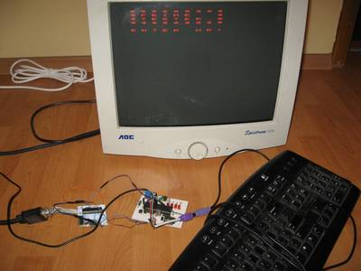

2017-02-23 - Nº 95

Editorial
Esta é a Newsletter Nº 95 que se apresenta com o mesmo formato que as anteriores. Se gostar da Newsletter partilhe-a!
Todas as Newsletters encontram-se indexadas no link.
Esta Newsletter tem os seguintes tópicos:
Faz hoje anos que nascia, em 1951, Shigefumi Mori. Este matemático japonês é conhecido pelos seus trabalhos na geometria algébrica. Ele generalizou a abordagem clássica para a classificação de superfícies algébricas para a classificação de três duplas algébricas. A abordagem clássica utilizou o conceito de modelos mínimos de superfícies algébricas. Foi ele que descobriu que o conceito de modelos mínimos também pode ser aplicado a três duplas se permitimos algumas singularidades nelas.
Esta semana a SpaceX lançou o seu foguetão da plataforma onde a NASA lançou os foguetões das missões Apollo e foi um sucesso. Foi lançado esta semana o Kernel do Linux 4.10. Este apresenta novidades no suporte de GPU virtuais, um novo sistema de analise de cache em sistemas NUMA, melhorias no sistema de writeback, um novo sistema híbrido de pooling para sistemas ARM e suporte para o novo sistema de caching da Intel - Cache Allocation Technology, entre outras melhorias. O telescópio Spitzer da NASA mostrou que existe um sistema de sete planetas à volta de uma estrela dos quais três têm condições viáveis para a habitabilidade. Provavelmente todos os planetas têm agua em estado liquido. Este é um novo recorde no numero de planetas viáveis a volta de uma estrela.
Na Newsletter desta semana apresentamos diversos projetos de maker assim como um modelo 3D que poderá ser útil.
 João Alves ([email protected])
João Alves ([email protected])
O conteúdo da Newsletter encontra-se sob a licença  Creative Commons Attribution-NonCommercial-ShareAlike 4.0 International License.
Creative Commons Attribution-NonCommercial-ShareAlike 4.0 International License.
Novidades da Semana ^
SpaceX Launches 1st Private Rocket from Historic NASA Pad
"SpaceX has launched the first private rocket from the same historic site that saw some of NASA's greatest space missions, then landed a booster nearby in a resounding success. The California-based company's Falcon 9 rocket launched a robotic Dragon cargo capsule toward the International Space Station today (Feb. 19) at 9:39 a.m. EST (1439 GMT) from Launch Complex 39A at NASA's Kennedy Space Center — the same pad that once hosted Apollo moon missions and space shuttle launches." [...]
Linux 4.10
"Linux 4.10 was released on 19 Feb 2017. Summary: This release adds support for virtualized GPUs, a new 'perf c2c' tool for cacheline contention analysis in NUMA systems, a new 'perf sched timehist' command for a detailed history of task scheduling, improved writeback management that should make the system more responsive under heavy writing load, a new hybrid block polling method that uses less CPU than pure polling, support for ARM devices such as the Nexus 5 & 6 or Allwinner A64, a feature that allows to attach eBPF programs to cgroups, an experimental MD RAID5 writeback cache, support for Intel Cache Allocation Technology, and many other improvements and new drivers." [...]
NASA Telescope Reveals Largest Batch of Earth-Size, Habitable-Zone Planets Around Single Star
"NASA's Spitzer Space Telescope has revealed the first known system of seven Earth-size planets around a single star. Three of these planets are firmly located in the habitable zone, the area around the parent star where a rocky planet is most likely to have liquid water. The discovery sets a new record for greatest number of habitable-zone planets found around a single star outside our solar system. All of these seven planets could have liquid water -- key to life as we know it -- under the right atmospheric conditions, but the chances are highest with the three in the habitable zone." [...]
Outras Notícias
- Latest PIC® MCU Family Brings Ease of Design with More Core Independent Peripherals
- A Drone-Slinging UPS Van Delivers the Future
- Boeing plans to build 3D-printed modular satellites
- Innovation and Competition Return to High-Performance PCs March 2nd with Worldwide AMD Ryzen 7 Availability
- Tokyo Tech supercomputer TSUBAME3.0 scheduled to start operating in summer 2017
- Split decision in first-ever quantum computer faceoff
- Sony launches the World’s Fastest SD card, the SF-G series
- AI learns to write its own code by stealing from other programs
- STMicroelectronics Extends Flexibility of STM32 Ecosystem with Latest STM32F722 Nucleo board and STM32F723 Discovery kit
- Samsung Launches Premium Exynos 9 Series Processor Built on the World’s First 10nm FinFET Process Technology
- SpaceX Dragon Delivers NASA Cargo to Space Station After 24-Hour Delay
Ciência e Tecnologia ^
Researchers devise efficient power converter for internet of things
"The “internet of things” is the idea that vehicles, appliances, civil structures, manufacturing equipment, and even livestock will soon have sensors that report information directly to networked servers, aiding with maintenance and the coordination of tasks. Those sensors will have to operate at very low powers, in order to extend battery life for months or make do with energy harvested from the environment. But that means that they’ll need to draw a wide range of electrical currents. A sensor might, for instance, wake up every so often, take a measurement, and perform a small calculation to see whether that measurement crosses some threshold. Those operations require relatively little current, but occasionally, the sensor might need to transmit an alert to a distant radio receiver. That requires much larger currents. Generally, power converters, which take an input voltage and convert it to a steady output voltage, are efficient only within a narrow range of currents. But at the International Solid-State Circuits Conference last week, researchers from MIT’s Microsystems Technologies Laboratories (MTL) presented a new power converter that maintains its efficiency at currents ranging from 500 picoamps to 1 milliamp, a span that encompasses a 2,000,000-fold increase." [...]
Big Improvements to Brain-Computer Interface
"When people suffer spinal cord injuries and lose mobility in their limbs, it’s a neural signal processing problem. The brain can still send clear electrical impulses and the limbs can still receive them, but the signal gets lost in the damaged spinal cord. The Center for Sensorimotor Neural Engineering (CSNE)—a collaboration of San Diego State University with the University of Washington (UW) and the Massachusetts Institute of Technology (MIT)—is working on an implantable brain chip that can record neural electrical signals and transmit them to receivers in the limb, bypassing the damage and restoring movement. Recently, these researchers described in a study published in the journal Nature Scientific Reports a critical improvement to the technology that could make it more durable, last longer in the body and transmit clearer, stronger signals. The technology, known as a brain-computer interface, records and transmits signals through electrodes, which are tiny pieces of material that read signals from brain chemicals known as neurotransmitters. By recording brain signals at the moment a person intends to make some movement, the interface learns the relevant electrical signal pattern and can transmit that pattern to the limb’s nerves, or even to a prosthetic limb, restoring mobility and motor function." [...]
Breakthrough in ‘wonder’ materials paves way for flexible tech
"Gadgets are set to become flexible, highly efficient and much smaller, following a breakthrough in measuring two-dimensional ‘wonder’ materials by the University of Warwick. Dr Neil Wilson in the Department of Physics has developed a new technique to measure the electronic structures of stacks of two-dimensional materials – flat, atomically thin, highly conductive, and extremely strong materials – for the first time. Multiple stacked layers of 2D materials – known as heterostructures – create highly efficient optoelectronic devices with ultrafast electrical charge, which can be used in nano-circuits, and are stronger than materials used in traditional circuits. Various heterostructures have been created using different 2D materials – and stacking different combinations of 2D materials creates new materials with new properties." [...]
Stanford researchers say extracting uranium from seawater could help nuclear power play a larger role in a carbon-free energy future
"As the world shifts from fossil fuels, additional sources of energy-on-demand will be needed to make up for lulls in wind or solar. A new way of extracting uranium from seawater could help even countries without uranium mines harness nuclear power in the post-carbon energy future. Trace amounts of uranium exist in seawater, but efforts to extract that critical ingredient for nuclear power have produced insufficient quantities to make it a viable source for those countries that lack uranium mines. A practical method for extracting that uranium, which produces higher quantities in less time, could help make nuclear power a viable part of the quest for a carbon-free energy future." [...]
Modelos 3D ^
Com a disponibilidade de ferramentas que permitem dar azo a nossa imaginação na criação de peças 3D e espaços como o thingiverse para as publicar, esta rubrica apresenta alguns modelos selecionados que poderão ser úteis.
Customizable breadboard
"This is simple project from openscad. I hope you will like it and post foto of your projects build on this breadboard. This is not like clasic breadboard, this dont have any metal parts so it serve only as part holder and you need to solder it toghether from botom." [...]
Projetos Maker ^
Diversos Projetos interessantes.

Retro computing
"Old computers fascinate me. With resources so limited they were able to do so much. They can do so much as a result of huge work and clever tricks from both hardware and software designers. Wanting to learn more about them I built myself a some kind of retro computer. What I achieved at the moment is a system that can take some input from a PS/2 keyboard, do some processing on the input and display a result on a monitor with VGA interface." [...]
2-Wheel Self Balancing Robot by using Arduino and MPU6050
"2-Wheel Self Balancing Robot by using Arduino and MPU6050. Use Arduino as the controller and sensor MPU6050 to control the balance. Just add a simple Serial Bluetooth module and use a Bluetooth Serial Controller APP for Android Phone to make the remote control. In the first version, the controller is Arduino UNO, then in the sencond version as the following video shows, just change it to Arduino Lenardo." [...]
ESP8266 MikroE Buggy
"This is a project that we wanted to do as a nice tutorial on how to make web interface that will operate on small WiFi enabled device. MikroElektronika offers a lot of boards and possibilities to operate their MIKROE-1670 Buggy Development Platform. Here we wanted to use one of our favorite platforms NodeMCU. Idea is to make a simple web server that will provide and driving interface from a web browser of your smartphone." [...]
Kaleidoscope Infinity Mirror
"A cross between a Kaleidoscope and an Infinity Mirror! As you change the rotation of the mirror, the lights change in response. This project is built with an off-the-shelf mirror and picture frame, and a few other components. The Arduino 101 development board has a built-in positional sensing that we can use to sense the angle, and control the light display. " [...]
Make your own Arduino Nano (DIY - Arduino Nano)
"In this instructable, I will show you how to make your very own Arduino Nano. I'm using laminator for the toner transfer method. What things you will need: Copper - clad board (Dual Layer); Ferric Chloride (FeCl3); Acetone (Nail polish remover); Glossy Paper; LASER Printer; Marker Pen; Scissors; Plastic container; Sand paper; Safety gloves; Latex gloves; Saw - For copper board cutting; Laminator or iron; Let's Do it..." [...]
Getting the T-Rex Endless Runner to work on a Component Tester
"Some time ago I got one of these transistor testers on eBay for around 10$. It is quite useful, specially because my multimeter does not measure capacitance or inductance. I did a samll write up about it in portuguese here. First thing I noticed was the popular Atmega 328p on the back of the board. For some reason, I tried to calibrate it (there was no need) and messed up the values. Whatever was wrong, was inside the chip, specifically inside the chip’s eeprom. I found a way to read and program the chip, and then tried erasing the eeprom using avrdude, but could not get the measurements right. This made me think the board already comes calibrated from the seller. Because it was so easy to program the chip, I had decided that if I could not get it working I would just use it for anything else. I turns out I was just using a small capacitor when calibrating it, after using a capacitor of higher value than the recommended it worked just fine. Anyways, the atmega328p used on the board it is the same present in many duinos out there(UNO, Nano, Mini, a thousand clones.. etc), so it got me thinking “Why something so hackable is not being hacked?”. I mean, it has an LCD screen, a sort of button, battery connection, and a SPI port available." [...]
Art Deco Weather Forecast Display
"Hello Friends, in this tutorial we are going to see hot to build this Weather Forecast Display. It uses a Wemos D1 mini board along with a 1.8” Color TFT screen to display the weather forecast. I also designed and 3d printed an enclosure for this project using wood filament! I got the inspiration for this Art Deco style enclosure from an old radio. I wanted a design for the Weather Station that would be unique and somehow artistic, I was bored of the square enclosures without any character. I wanted something to make me feel good when looking at it. The project connects to the internet and retrieves the weather forecast for my location and displays it on the screen. The project only displays the weather icon, the temperature and the time of the prediction because I wanted a minimal look for this project. Of course you can easily add more information if you wish. Now let’s see how to build this project." [...]
Build Your Own Microcontroller
"This instructable will show you how to build your own microcontroller from scratch! This method is simple and doesn't require any advanced tools, you can even do it at your kitchen table. This also gives a better understanding of how Ardruinos and other microcontrollers really work. You can design your microcontroller to fit your specific purpose. This microcontroller shown in the picture was used to control the rpm of a DC-motor. The DC-motor was controlled from a computer using the serial port. The LEDs were used to assist when debugging was needed. In this Instructable I will show how to build a versatile microcontroller, therefore the part list will not be the same as the one shown in the picture." [...]
Smart Mirror by Raspberry Pi
"So there was an unused raspberry pi 1B in the drawer and an unused monitor. That's reason enough to create a Smart Mirror. The mirror should show time, date and weather information as well as status information about smart home switches and what music is currently playing." [...]
Galileo 2 driving MCP23017 and 74HC4511 Digit Displays
"Using the Galileo II and ANSI C, demonstrate how to drive the MCP23017 IO Expanders 16 general purpose outputs, themselves driving four 74HC4511 seven segment display drivers. The 74HC4511 accepts as inputs a 4 bit binary encoded decimal value. This value is interpreted as a single digit, and the 74HC4511 converts this value to provide output to the seven individual segments to display the digit. The C code demonstrates how to interact with the MCP23017 using the MRAA I2C interface. This interaction is composed of two bytes, with each byte driving the two general purpose IO groups. Each byte is composed of eight bits - two four bit groups. Each four bit group represents a digit to the 74HC4511. The C code further demonstrates the use of structures - to contain the four digit values, and for each, a flag indicating whether to enable the specific seven segment display, or blank it out all together. The code further demonstrates the power of C bit wise operators, and the simplicity of manipulating bits. Finally, for the new C coder, clean code demonstrating the use of explicit values in function calls, and avoiding the use of global variables." [...]
iSwitchPi Adds an Intelligent Power Switch to Your Raspberry Pi
"A Raspberry Pi does not have an On/Off switch and there is no easy way to shutdown the Pi while keeping the filesystem intact. This Intelligent Power Switch brings a clever solution to this problem: Power-On the Pi by pressing a pushbutton and also properly power-off the Pi with another press on the same button.The intelligence is provided by a program running in an AVR MCU ATtiny44. This C-program implements a Finite State Machine in the MCU. A small Python script is running in the Pi itself. Just one GPIO-Pin is used for two-way communication between the Pi and the iSwitchPi board. The iSwitchPi board additionally provides a square wave output with variable frequeny that can be used to trigger interrupts on the Pi." [...]
Giftduino - The Perfect Arduino Gift Box
"Every Day is a Great Day for a Gift! Design your own Giftduino and give it to someone special :) For this project, we used two relatively new components on circuito.io: the Hall Effect sensor and the Nokia Graphic LCD. The hall effect sensor reacts to a magnetic field. In order to activate it, there needs to be a change the magnetic field around it. So as you’ve probably guessed we used a magnet. The magnet is placed on the lid of the gift box." [...]
Arduino Heart Rate Monitor
"This simple and inexpensive project is based around the MAX30100 sensor breakout board and utilizes a small 0.91" OLED display to report the heart rate and oxygenation level. Both the devices used have an I2C two-wire interface and therefore keeps the wiring down to a minimum." [...]
Controlling a Stepper Motor with an SIRC Transmitter and Receiver
"Part one of this project described the principles of IR (infrared) signaling in general, and the SIRC (Sony Infrared Remote Code) in particular. A receiver circuit was presented to detect, decode, and display the information contained in the SIRC signals using a PICAXE microcontroller. Part two of the project will build on that foundation by revisiting the 28BYJ-48 unipolar stepper motor that was introduced in a prior article. In addition, an IR transmitter circuit will be presented that is easy to build and use with the home-built receiver and a ULN2003A and that allows us to remotely start, stop, and control the rotational direction of the stepper motor. The appropriate code will be included for both the SIRC transmitter and receiver." [...]
Reactive LED Pendant
"This instructable guides you through the steps in building a ceiling-mounted light that controls thousands of addressable RGB LEDs, reacting to sound and creating visually spectacular animations. A project to inspire your night club with sound-reactive lights, or a project to create a soothing ambient light for your study. The possibilities for customization are endless if you can just write a bit of custom arduino code. This project has been a collaboration with GitHub's @daterdots, and stands on the shoulders of giants like arduino, pjrc, and the fastled community." [...]
WiFi Weather Display with ESP8266
"Every morning when I get ready to walk the dog, I want to know what the weather is like outside. Is it raining? Cold enough for the dog's sweater? From my current NYC apartment, it's even hard to tell if I'll need sunglasses when I step outside. I usually use my phone for checking the weather, but wouldn't it be nice to have some wall decor that provides this info at a glance? I built this IoT weather display using a small shadow box, some RGBW NeoPixel LEDs, and an Adafruit Feather Huzzah ESP8266 with seven-segment display FeatherWing. Weather data is tracked using IFTTT, an incredibly rich (and free ) API gateway, which sends data to the cloud service Adafruit IO, which is then accessed by the Arduino program running on the microcontroller. Before attempting this project, you should be familiar with Arduino, and you can take my free Arduino Class, or Randy's LEDs & Lighting Class or Electronics Class if you need to brush up on any of the basic skills." [...]
Cheap IKEA Raspberry Pi computer
"For Christmas we decide to "upgrade" the computer of our daughter with the Rpi V3. We bought the RPi at Pimoroni: https://shop.pimoroni.com/, a nice shop with a great support. The Idea came from my wife as we had at the kitchen a tablet stand from IKEA (model Rimforsa), as we where inspired by the Kano design. Fro the screen I bougth a LCD screen in DealExtreme, with the HDMI connector. For the sound I used a cheap speaker, but at home, the Rpi is mainly connected to a bluetoth speakers. The concept is quite simple, a big cut for the screen, and them hiding the Pi and the electronics behind the screen." [...]
How To Make A Custom Control Panel for Elite Dangerous, or Any Other Game
"So you want to make a custom switch panel for Elite Dangerous, or some other game, huh? It's easier than you might think. I made one, and people like it... My original post on Reddit. If you've never used an Arduino or done any coding, this is a pretty good place to start. If you're not good at soldering now, you will be by the time you have finished. And if you've ever wanted to use the term 'matrix' in conversation without referring to an overrated Hollywood movie, then read on. You're in the right place. First of all, there are a couple of fundamentals to understand before we continue. Have a cursory glance at these articles. Go there, understand what a matrix is, why it's useful here, and then come back.." [...]
MyQlockTwo : RGB and WiFi QlockTwo project
"Last November, I went to an art gallery and came across a pretty design clock that would have found its place in my living room. After seeing its price, I felt of passing out! When I came back to myself, I decided to build it myself (in better). I wish to present you a small project that has occupied me lately: The reproduction of a design clock. This clock is a square about 39cm, which can be placed on furniture or hung on a wall. The facade consists of cleverly arranged letters that will give the time. The principle is simple. The clock is composed of a matrix of characters that will illuminate to write the time it is. For example "it is eight to ten minutes" or "it is midnight and a half". The time is thus given in 5-minute increments. Four luminous points at each corner of the clock will successively light up to give the hour to the minute in that slice." [...]
ArduCAM Mini ESP8266 Web Camera
"This video demonstrates using an ArduCAM Mini with an ESP8266-12E development board. The ESP8266 web interface allows jpeg files to be captured and stored to the onboard memory. The stored files can be accessed and displayed on a web browser. The interface also allows video streaming! This little web camera can be used in many ways. A spy camera, time lapse camera, nanny cam, wildlife cam, etc. I'm planning on using as part of my high tech chicken coop security system: another project for another day!" [...]
Adafruit IO Basics: Temperature & Humidity
"This guide is part of a series of guides that cover the basics of using Adafruit IO. It will show you how to send temperature and humidity values wirelessly to Adafruit IO from a DHT22 sensor. If you haven't worked your way through the Adafruit IO feed and dashboard basics guides, you should do that before continuing with this guide so you have a basic understanding of Adafruit IO." [...]
AndroBot
"AndroBot is an Android Controlled Advanced Robot and it is a combination of Android Controlled Rover With Robotic Arm.So Lets start with its history: Idea and Inspiration. Almost Two Months ago i watched a movie" The Hurt Locker ",In it a rover is shown which is with the Bomb squad team and it works good but failed to complete its main task.And its design and functions inspired me.I am not a well experienced Robotics Project maker but i know that i can make a similar one ya it will be not of that quality,accuracy and costly but it can perform same tasks." [...]
Tesseract Infinity Desk
"Ready to build a mind-warping, light-abstracting, infinitely deep array of color-changing lights as practical furniture? Then read ahead and get ready for some fun! Pictures are heavily used throughout this guide, hoping you find them helpful and enjoyable :-) After seeing the movie Interstellar and the incredible tesseract scene near the end, I wanted to create something involving light, mirrors, and have a daily use in my home. There are a few two-plate infinity mirror guides already on Instructables, but I wanted something more complex and striking -- enter six-plates!" [...]
House's Monitoring Consumption With Arduino UNO
"I want a monitor of consumption for my house, and after catch it online, I decided to make one. I want use Arduino UNO with Ethernetsshield, and Cayenne. Arduino UNO is a famous microcontroller. Do you want one? Do you want know all about this? Follow the link (arduino.cc). Cayenne is a great service that give a platform to everybody that want make an IoT project. Cayenne is a service for IoT and also MQTT protocol with a great community, and a lot of tools. You can use Arduino UNO, Arduino YUN, Raspberry Pi, and more, for create your personal project. Sign Up now for free, and begin to experiment the many possibility." [...]
Flower Dome Retro Module
"Old computer peripherals. They're everywhere. Most simply consist of a box, a few wires & a few connectors. Instead of trashing that old box of peripherals in the attic, consider turning them into Retro Modules. This Instructable details how to create a NeoPixel "flower dome" Retro Module, similar to the one seen in Beauty and the Beast. If you prefer, the "flower" pictured can be decorated to more closely resemble a real flower." [...]
Using An ESP8266 As A WiFi Enabled Universal Remote
"I think it's a cool project that can be easily adapted or extended to whatever suits your needs. Check out the video for a demo and quick run through what's involved in the project. The code, hardware and circuit diagram are available on github." [...]
Game of Snakes and Ladders
"This is an electronic game of snake and ladders. The position of the snake and ladders is pseudo random in the sense that the snakes and ladders are not fixed and change every time the switch is pressed(analogous to rolling a dice). The dice number and whether the person has encountered a snake /ladder/ nothing is indicated on the LCD. The game has been designed for two users and both have been provided with separate switches. Unlike the board game , the electronic game has been designed for 64 boxes." [...]
Raspberry Pi Strava Monitor
"The Strava Monitor is a LED small display that shows off some of your exercise statistics from Strava. It's small enough to put on a bookshelf and only requires a single power cable. All the data is regularly pulled from Strava over a wifi connection and displayed on its screen." [...]
That's all Folks!